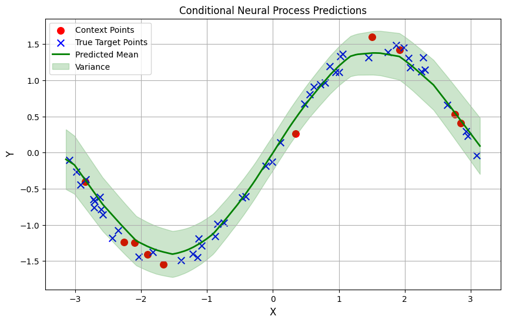
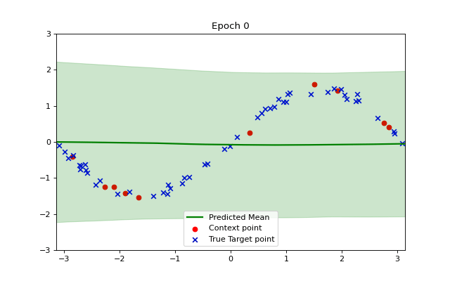
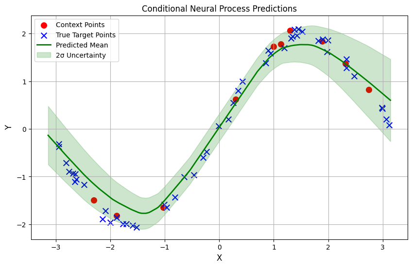

Learning Functions with Conditional Neural Processes
Machine Learning
Neural Processes
tutorial
Implementing a Conditional Neural Process model to learn the sine wave function
Author
Neerja Kasture
Published
August 25, 2025
Introduction
Meta learning models help us ‘learn how to learn’. They are models that can learn new tasks quickly from just a handful of examples. In this blog, we explore a simple but powerful framework for this: the Conditional Neural Process.
Imports and Setup
Code
import numpy as npimport torchimport torch.nn as nnfrom torch.distributions import Normalimport torch.optim as optimimport matplotlib.pyplot as pltimport matplotlib.animation as animationnp.random.seed(42)torch.manual_seed(42)torch.cuda.manual_seed(42)device = torch.device("cuda"if torch.cuda.is_available() else"cpu")
Creating training data
Instead of training on a fixed dataset, our model learns by seeing functions. In every training step, we generate a new sine wave of the form \(𝑦=𝑎sin(𝑥)\) where the amplitude \(𝑎\) is randomly chosen from a uniform distribution in (-2,2). Then we randomly sample points from this function to be context points and target points. We have also added random gaussian noise to our data.
Encoder : A neural network that takes in context pair \((x_i , y_i)\) and transforms them into representation vector \(r_i\). To combine information from all context points, we take an average over all points and get a vector \(r\) of same dimension as each vector \(r_i\).
Decoder: A neural network that uses the representation \(r\) to make predictions at target point \(x_t\). We pass in concatenated \([r,x_t]\) as the input and the output is the predicted mean and variance of \(y_t\). We normalize the value of sigma to make sure it is positive.
class Encoder(nn.Module):def__init__(self, output_dim):super().__init__()self.fc1 = nn.Linear(2, 128) # (x_context, y_context) as inputself.fc2 = nn.Linear(128, 128)self.fc3 = nn.Linear(128, output_dim)self.relu = nn.ReLU()def forward(self, x): x =self.relu(self.fc1(x)) x =self.relu(self.fc2(x)) x =self.fc3(x)return xclass Decoder(nn.Module):def__init__(self,r_dim):super().__init__()self.fc1 = nn.Linear(r_dim+1, 128) # (r vector, x_target) concatenated as inputself.fc2 = nn.Linear(128, 2)self.relu = nn.ReLU()def forward(self, x): x =self.relu(self.fc1(x)) x =self.fc2(x) mu,log_sigma = x.chunk(2, dim=-1)return mu, log_sigmaclass ConditionalNeuralProcess(nn.Module):def__init__(self,r_dim):super().__init__()self.encoder = Encoder(r_dim)self.decoder = Decoder(r_dim)def forward(self,context_x,context_y,target_x): context_point = torch.cat([context_x, context_y], dim=-1) r_i =self.encoder(context_point) r =torch.mean(r_i,dim=0) num_target = target_x.shape[0] r_expanded = r.expand(num_target, -1) decoder_input = torch.cat([r_expanded, target_x], dim=-1) mu, log_sigma =self.decoder(decoder_input) sigma = torch.exp(log_sigma) # variance must be positivereturn mu, sigmar_dim =128model = ConditionalNeuralProcess(r_dim).to(device)
The code below will help us visualize the model inputs and predictions.
Lets sample data for an example function with a = 2. What does our model’s prediction look like before training?

Training
The model is trained by minimizing the negative log-likelihood (NLL) — encouraging the predicted distributions to assign high probability to the true target values.
The losses for the overall training process oscillate a lot but we can see a downward trend, as in the plot below.
We can visualize how the training makes our model converge to the example function using a short animation. Observe how the shaded green area indicating variance becomes smaller as our model becomes more accurate and confident.

Conclusion
So, after training, the model is predicting a good approximation of our function.

I would say that CNPs are a rather simple approximation to neural processes. Their aggregator function being simply a mean may lose information and they do not model uncertainty as well, being a deterministic model. However they are simple to train and perform reasonably well on simple functions such as the sine wave.